B.U.T. Génie mécanique et productique — Céline Dobigeon
Origines
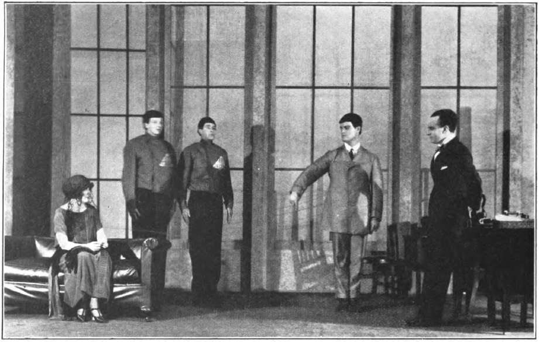
Origines
Trois mots qu'on confond, trois niveaux d'autonomie.
La différence n'est pas la forme de la machine, mais ce qu'elle sait de son environnement.
Origines
Les premiers robots, et ce qui a suivi.
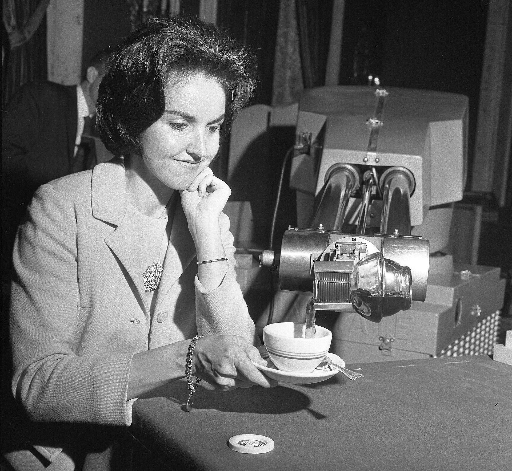
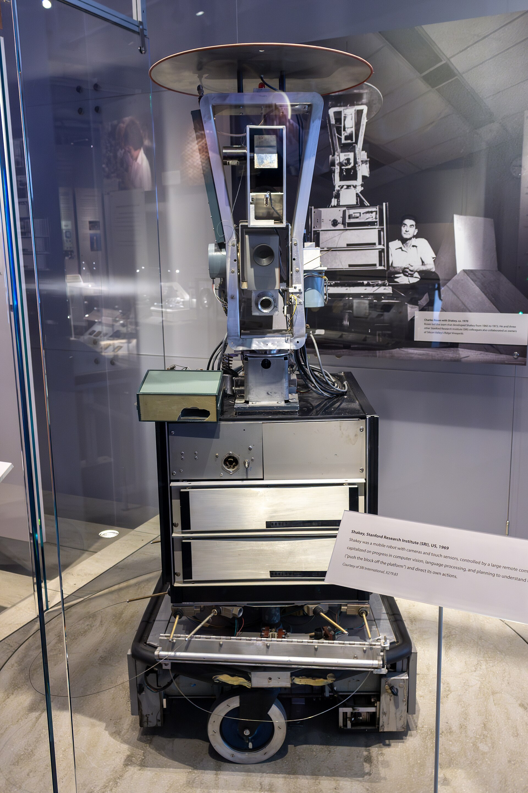
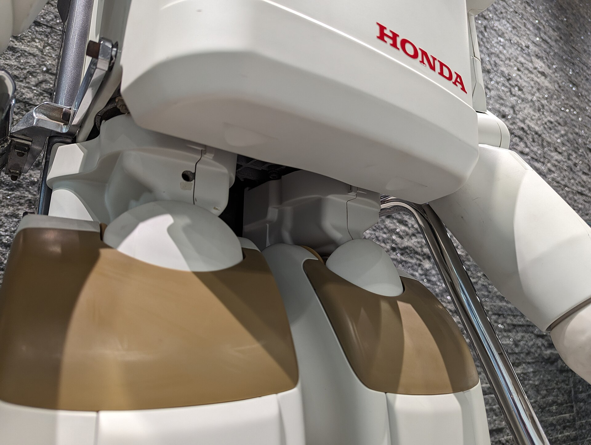
Le marché
Combien de robots travaillent dans le monde, et ce qu'ils pèsent rapportés à l'emploi industriel.
Source : IFR, World Robotics 2026 — parc 2025 ; densité : World Robotics 2024, données 2023, France 2022
Le marché
Source : IFR, World Robotics 2026 — données 2025
Le marché
Qui achète ces robots, et pour quoi faire.
Source : IFR, World Robotics 2024 — installations 2023
Pourquoi robotiser
Aucune de ces raisons ne tient seule : c'est leur combinaison qui décide d'un projet.
Pourquoi robotiser
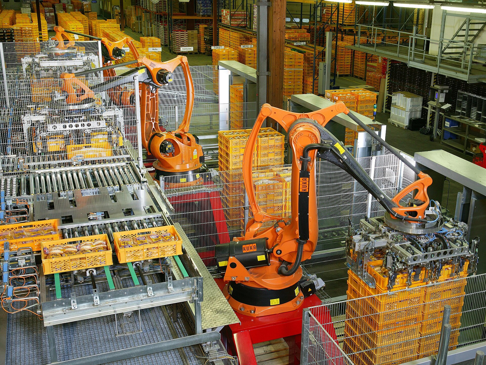
Architectures
Architectures
Architectures
Le choix se fait sur un cahier des charges, pas sur un catalogue.
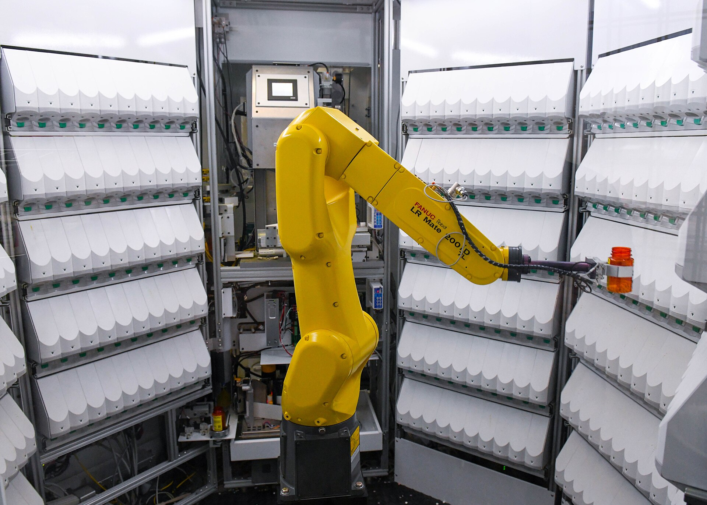
Ces cinq critères viennent du cahier des charges de l'application. Les valeurs qui permettent d'y répondre se lisent dans les fiches techniques du constructeur.
Sécurité
Sécurité
Trois façons de borner ce que le robot peut atteindre, réglées dans le contrôleur.
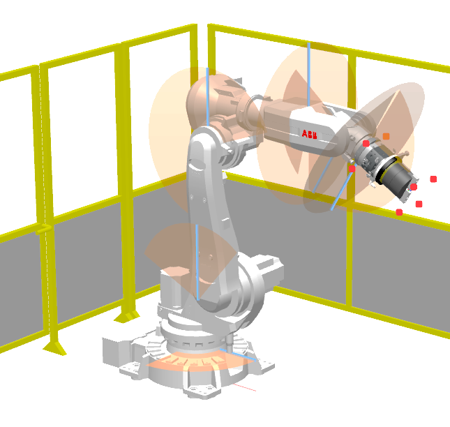
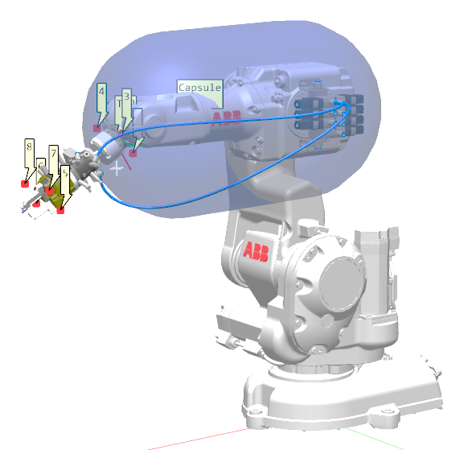
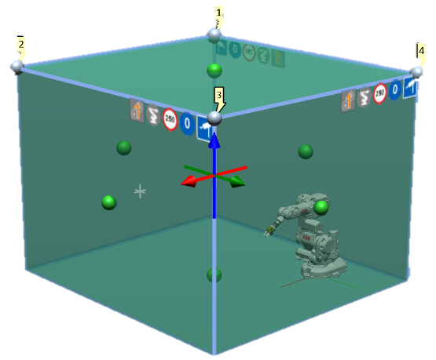
Ces limitations se configurent dans le contrôleur. Elles s'ajoutent aux butées mécaniques, qui restent efficaces hors tension.
Sécurité
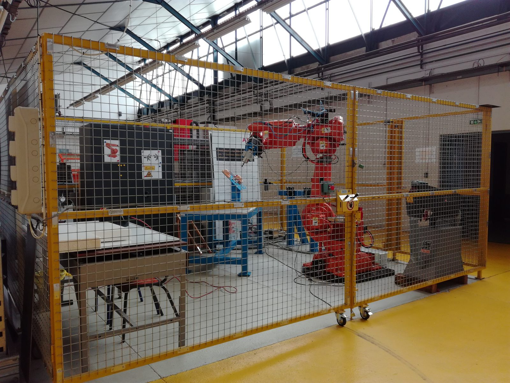
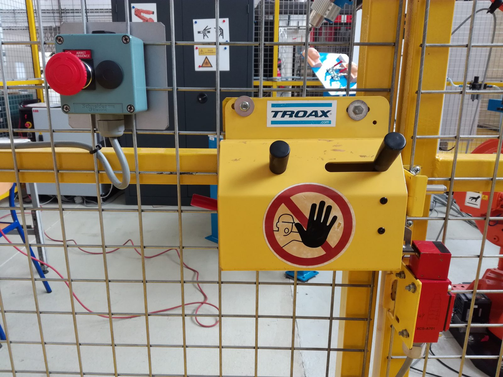
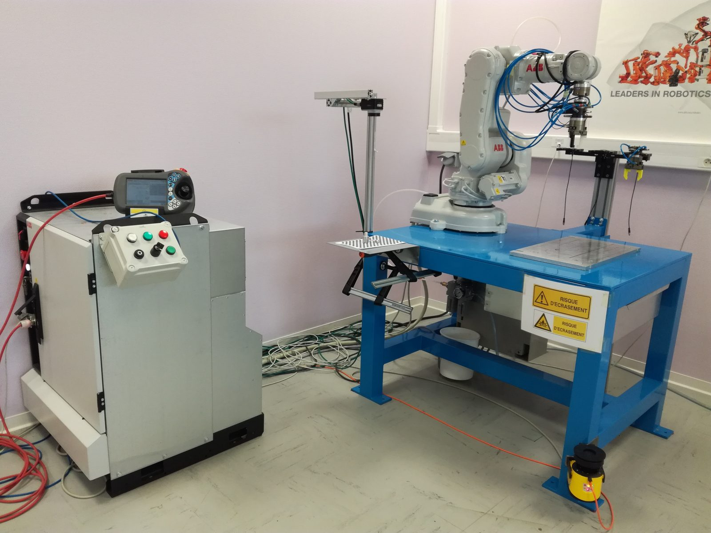
Collaboratif
Les trois premiers modes séparent dans le temps ou dans l'espace. Seul le quatrième admet vraiment le contact.
Collaboratif
« Collaboratif » qualifie une application, jamais une machine seule.
C'est l'analyse de risques de l'application qui décide, pas l'étiquette du bras.
Collaboratif
La cellule
Le bras représente souvent moins du tiers du coût de la cellule.
Programmer
Les trois se combinent : on écrit hors ligne, puis on recale les points sur la machine réelle.
Programmer
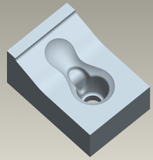
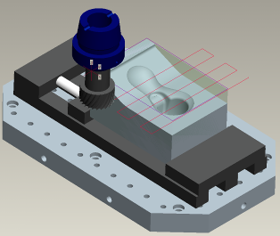
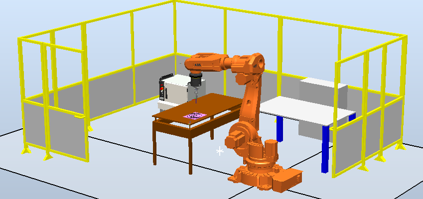
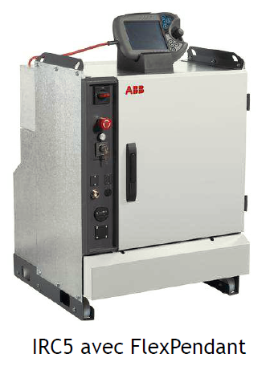
Le post-processeur traduit le parcours dans le langage du constructeur — RAPID chez ABB. Le recalage sur la machine corrige ensuite l'écart entre le modèle et le réel.
Programmer
Programmer
Programmer
Modèles
Des angles d'axes vers la pose de l'outil : x = f(q).
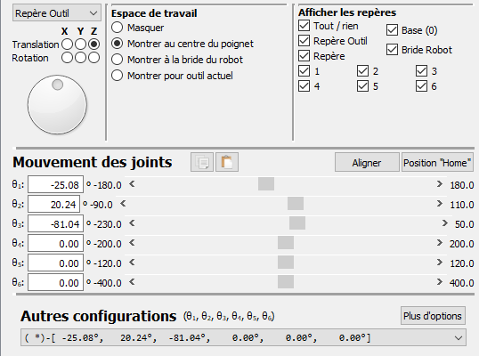
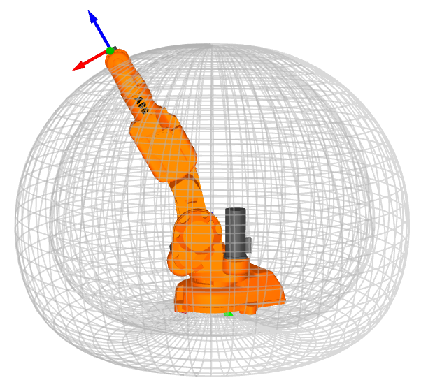
Modèles
De la pose de l'outil vers les angles d'axes : q = f-1(x).
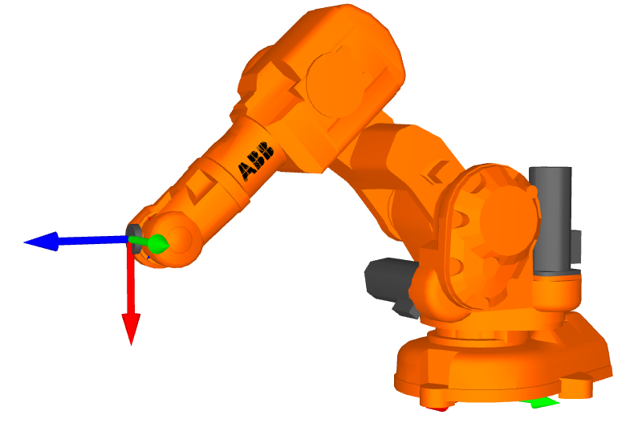
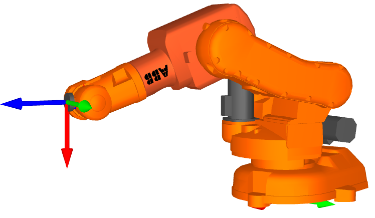
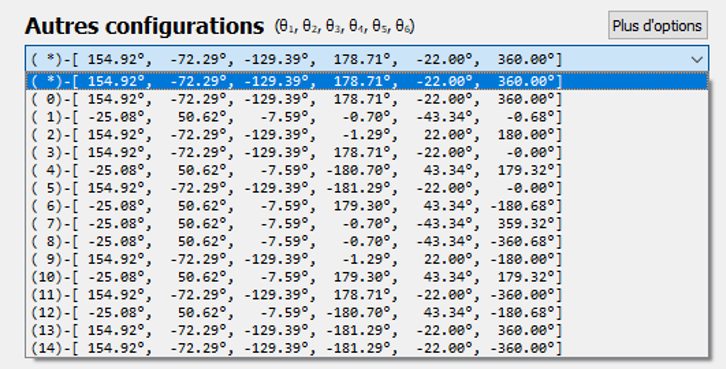
Modèles
Là où le modèle inverse perd pied.
Les axes 4 et 6 s'alignent — l'axe 5 passe par 0°. Les deux tournent alors autour de la même droite : le contrôleur ne sait plus répartir la rotation entre eux, et peut lancer l'axe 4 à pleine vitesse pour un déplacement infime de l'outil. C'est celle que l'on rencontre le plus souvent en TP.
Le centre du poignet passe à l'aplomb de l'axe 1. Pour poursuivre une ligne droite qui traverse cet aplomb, l'axe 1 devrait pivoter d'un demi-tour instantanément.
Le bras et l'avant-bras sont alignés : le robot est en extension maximale, au bord de son enveloppe. Il ne peut pas aller plus loin, et le moindre écart demande une correction brutale des axes 2 et 3.
Ouverture
Le TP commence là où le cours s'arrête.